James Madison University · Department of Engineering
James Madison University (JMU) invites applications for the position of Department Head and Endowed Faculty Chair of Engineering. This is a tenured, 12-month appointment at the rank of Professor or Associate Professor. A recent commitment establishing the endowed chair provides significant resources and flexibility for the Department Head to pursue a broad range of initiatives aligned with the Department’s needs, opportunities, and the successful candidate’s interests.
Our ABET-accredited Department of Engineering consists of 18 instructional faculty and 6 staff members serving approximately 750 students, with about 120 graduates each year. The Department offers a B.S. in Engineering, and students may choose to pursue concentrations in Electro-Mechanical Systems, Geo-Environmental Systems, or Civil & Environmental Systems. As an undergraduate-focused engineering program within a large public university, we combine the close faculty-student interaction and small class sizes often associated with smaller programs with substantial facilities, staffing, and resources. Our project-based curriculum gives students significant responsibility for their own work in courses, laboratories, research, and design projects, creating a highly hands-on learning environment. Students have access to a fully staffed machine shop, fabrication laboratory, digital prototyping facilities, and dedicated capstone and project workspaces. Research, project, and instructional infrastructure includes more than $2 million in tools, instrumentation, and equipment located in over 30,000 square feet of dedicated engineering laboratory, fabrication, research, and project space.
Please use this space to explore our people, curriculum, and student experiences.
Apply at: jobs.jmu.edu
01 — The department
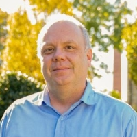
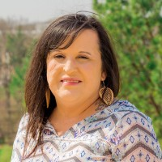
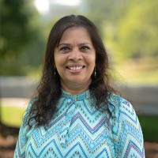
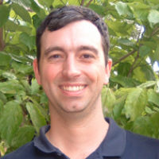
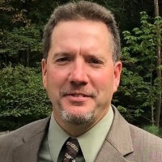
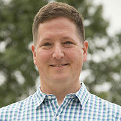
Karim Altaii
Professor
Ph.D. Mechanical Engineering — CUNY
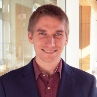
Johnathon Barbish
Assistant Professor
Ph.D. Mechanical Engineering — Virginia Tech, 2023
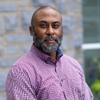
Kyle Gipson
Professor
Ph.D. Polymer & Fiber Science — Clemson, 2011
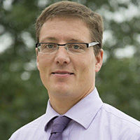
Keith Holland
Professor · Associate Vice Provost for Research and Scholarship
Ph.D. Mechanical & Aerospace Engineering — UVA, 2004
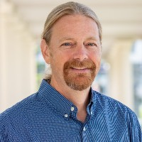
Robert Prins
Professor
Ph.D. Mechanical Engineering — Virginia Tech, 2005
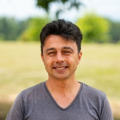
Cuneyt Yalcin
Visiting Lecturer
Ph.D. Mechanical Engineering — University of New Hampshire, 2009
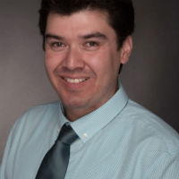
Daniel Castaneda
Associate Professor
Ph.D. Civil Engineering — UIUC, 2016
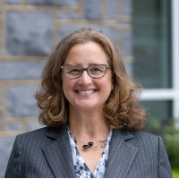
Heather Kirkvold
Associate Professor
Ph.D. Civil Engineering — University of Kansas, 2009
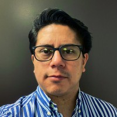
Pedro Puente
Assistant Professor
Ph.D. Environmental Engineering — University of Michigan, 2025
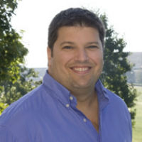
Bradley Striebig
Professor · Academic Advisor
Ph.D. Environmental Engineering — Penn State, 1996
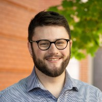
Steven Woodruff
Assistant Professor
Ph.D. Civil Engineering — University of Michigan, 2022
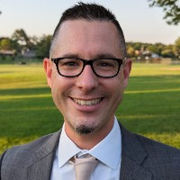
Jason Forsyth
Associate Professor
Ph.D. Computer Engineering — Virginia Tech, 2015
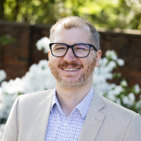
M. Ceylan Morgul
Visiting Assistant Professor
Ph.D. Electrical Engineering — UVA, 2025
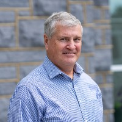
Steven Harper
Professor
Ph.D. Systems & Entrepreneurial Engineering — Illinois, 2006
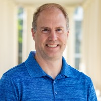
Brent Cunningham
Assistant Professor of Practice
Ph.D. Macromolecular Science & Engineering — Virginia Tech
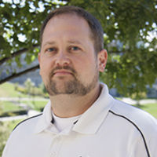
Samuel Morton
Professor · Program Director
Ph.D. Chemical Engineering — University of Tennessee, 2004
Shraddha Joshi
Associate Professor · Assistant Department Head
Ph.D. Mechanical Engineering — Clemson, 2013
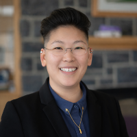
Christine Toh
Assistant Professor
Ph.D. Industrial Engineering — Penn State
No one matches that filter.
02 — The program
The Department offers a single ABET-accredited B.S. in Engineering, built around 129 credit hours. A 42-credit engineering core, taken alongside math and science coursework, gives every student the same broad grounding before they specialize. From there, a seven-credit sequence pairs engineering projects and capstone work with a practicum series to deliver just-in-time project management guidance. The remaining 15 credits are electives: students can take them freely or use them to complete one of three named concentrations: Civil & Environmental Systems, Geo-Environmental Systems, or Electro-Mechanical Systems. Full admission to the major itself is competitive and happens at the sophomore level, based on four prerequisite courses and a written statement.
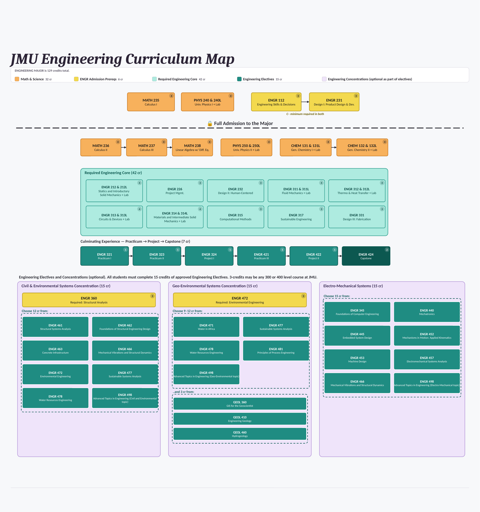
03 — The proof
See how our students engage in the classroom, through capstone projects, and through undergraduate research.
Engineering 231 · Fall 2023
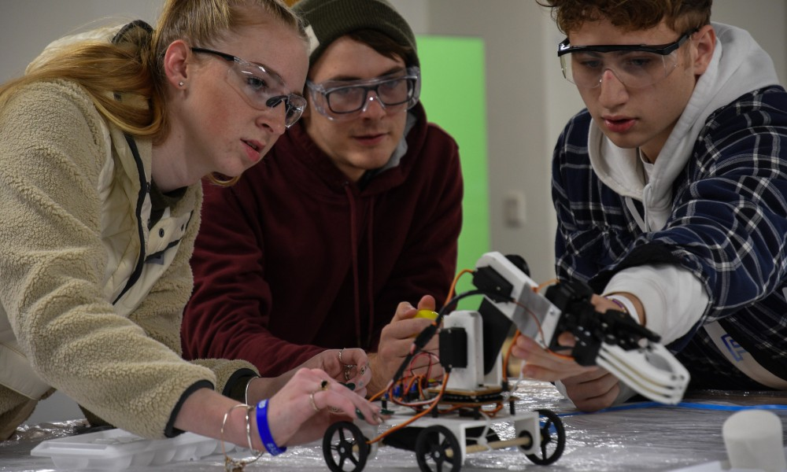
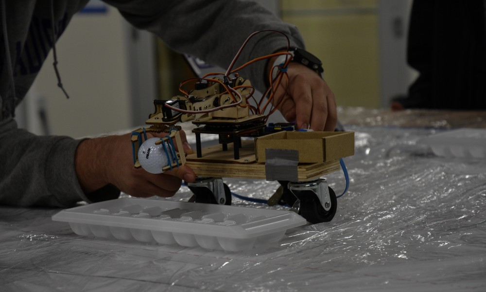
In ENGR 231, a redesigned single-semester course, second-year students spend five weeks on engineering-skills challenges and five weeks building a robotic-arm prototype aimed at a real problem: understaffed home healthcare. Final projects were tested lifting a stand-in patient — an egg, a marshmallow for a mattress, and a golf ball for equipment.
"Engineers mustn't tinker — we must design — and we do that with a lot of math and physics."
— Daniel Castaneda, engineering faculty
"I want to become a biomedical engineer, so I want to create medical technology. This project has really helped me explore that space."
— Julia Larson, second-year engineering major
Read more here: jmu.edu/news, Dec 15, 2023
NASA Student Launch · 2024–26 · Vulcan I & Sirius I
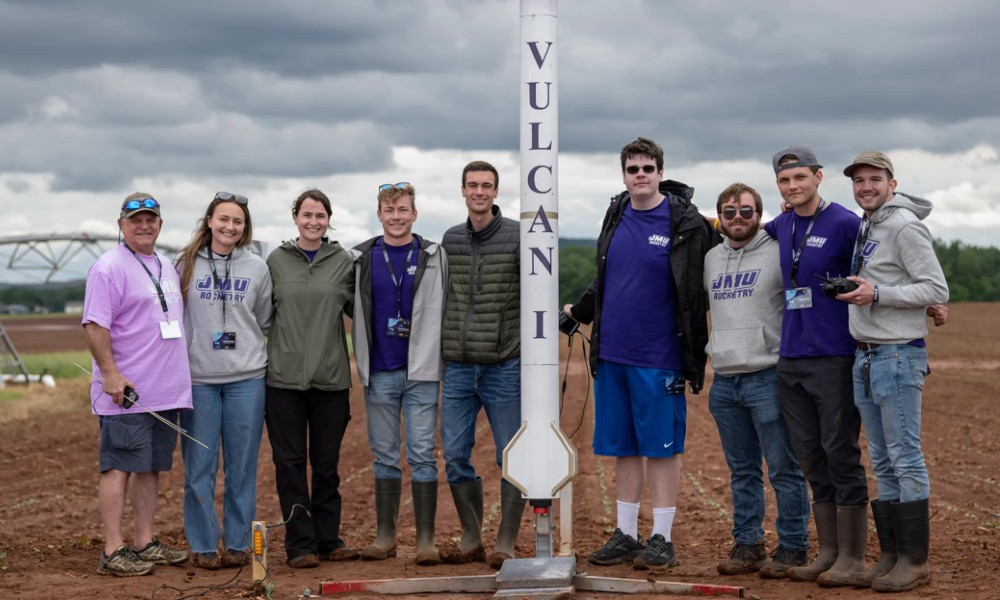
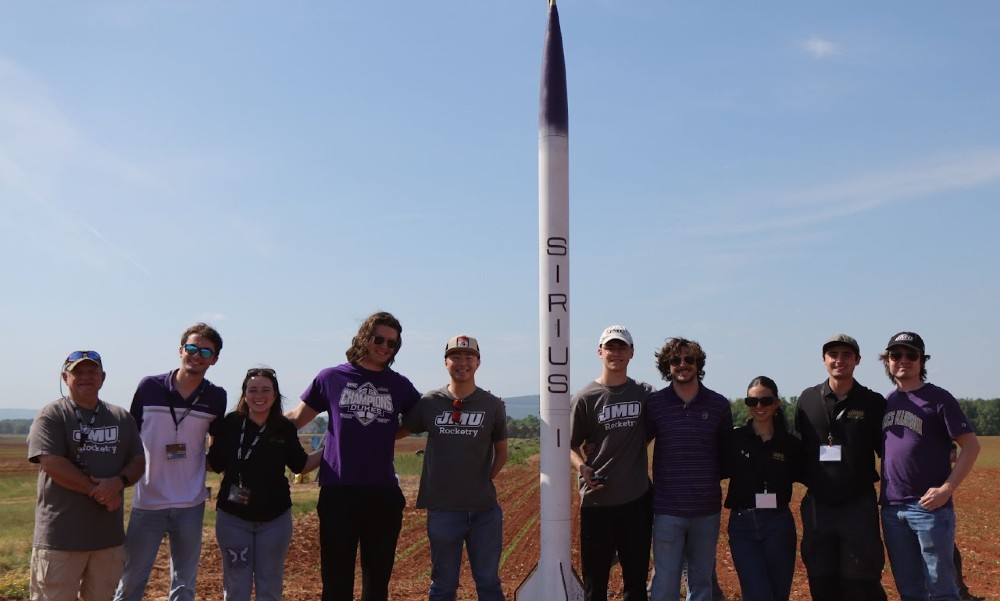
Two JMU Engineering senior capstone teams have competed in NASA's Student Launch Initiative under faculty advisor Dr. Steven Woodruff. Project Vulcan I took first place overall against more than 50 university teams in 2025; the following year, Sirius I placed ninth and won an AIAA Reusable Launch Vehicle Award.
"We all chose this challenging capstone to develop new skills and prove that JMU engineers could be competitive."
— Josiah Walker, Vulcan I team member
"The technical knowledge matters, but learning how to make sound decisions under pressure, communicate across disciplines and improve after failure is what prepares them for professional engineering."
— Dr. Steven Woodruff, faculty advisor to both teams
Read more here: jmu.edu/news, Jul 21, 2025 · jmu.edu/news, Aug 27, 2026
CISE Student Showcase · Engineering Day, EnGEO · Apr 18, 2026
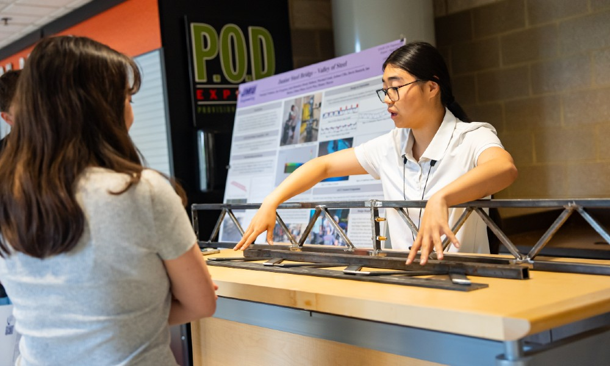
Within the CISE Student Showcase's two days and 100-plus projects college-wide, Engineering's senior capstone teams get a day of their own for exhibits and demonstrations in the EnGEO building. This year's eleven-team lineup included an AISC–ASCE steel bridge competition team, weight-lifting prosthetics, two Shell Eco-marathon vehicles (internal-combustion and electric), an AIAA Design-Build-Fly aircraft team, an electric human-powered vehicle, a stream-restoration study, a theater modular lift, and a biomedical device for lower-back pain — alongside the NASA Student Launch rocket team featured elsewhere on this page.
Read more here: jmu.edu/news, Apr 24, 2026 · jmu.edu/cise, Engineering Day schedule
Senior Banquet & Order of the Engineer · Jun 17, 2026
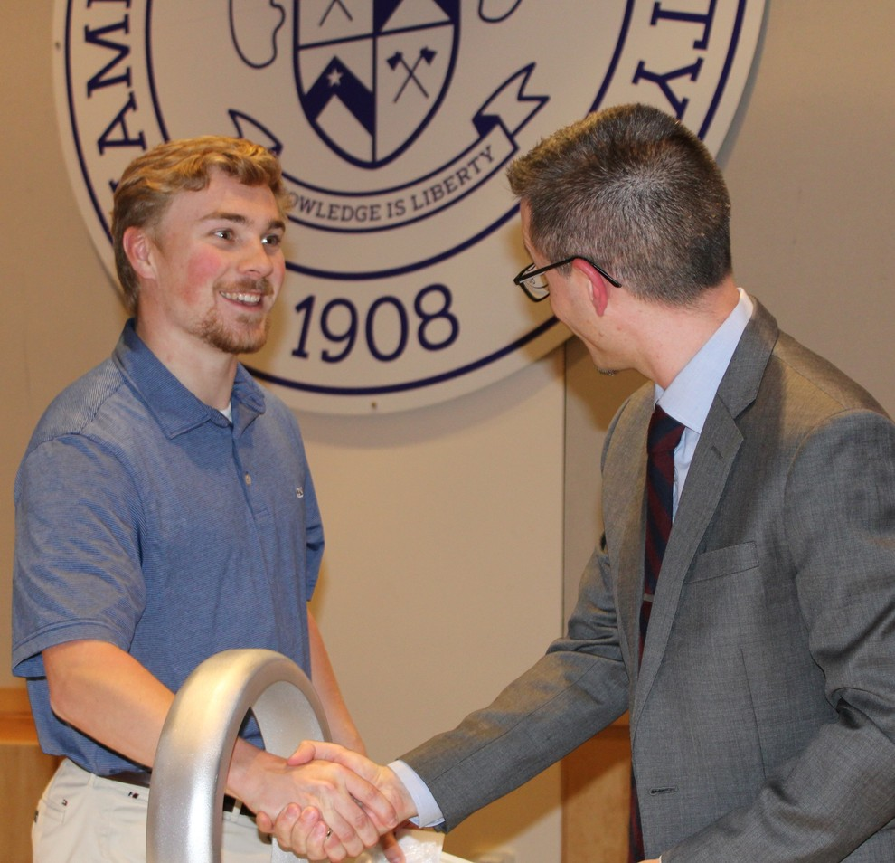
As the academic year closed, graduating seniors were inducted into the Order of the Engineer at the Senior Banquet — taking an oath to the profession and public safety, and receiving an Engineer's Ring.
Read more here: @jmuengineering, Jun 17, 2026
Systems and Information Engineering Design Symposium · UVA · Jun 17, 2026
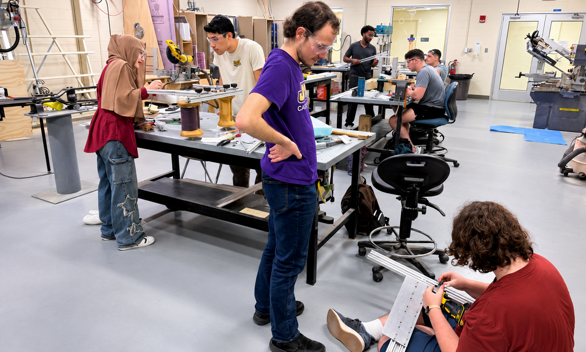
Two capstone teams advised by Dr. Karim Altaii each built a portable spinal-traction device as an alternative to bulky clinic equipment — a pneumatic traction chair and a mechanical crank-driven design — and presented both at the 2026 Systems and Information Engineering Design Symposium at UVA.
"The best part was the freedom — being given a problem and designing a solution from scratch."
— Marvin Fuentes, team lead
Read more here: jmu.edu/news, Jun 17, 2026
MANTECH Industry Partnership · Published Dec 5, 2025
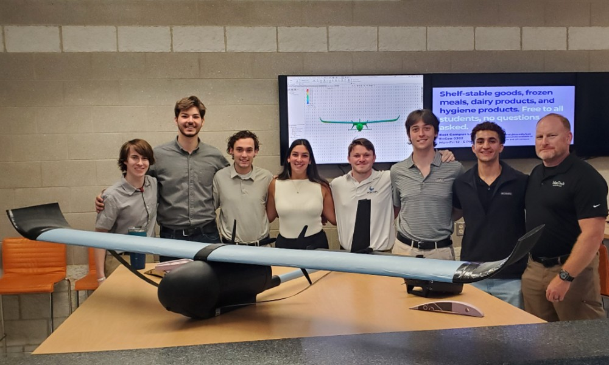
Defense contractor MANTECH sponsors engineering capstone projects — including a “Drone Accelerator” project — hosts facility tours and resume-review sessions, and recruits directly out of capstone work.
"Capstone projects offer opportunities to mentor and evaluate students over sustained periods — relationships that often lead directly to hiring."
— Chris Troughton, MANTECH Academic Engagement Lead
Read more here: jmu.edu/news, Dec 5, 2025
Explore More Discovery Museum · Harrisonburg, VA · May 13, 2024
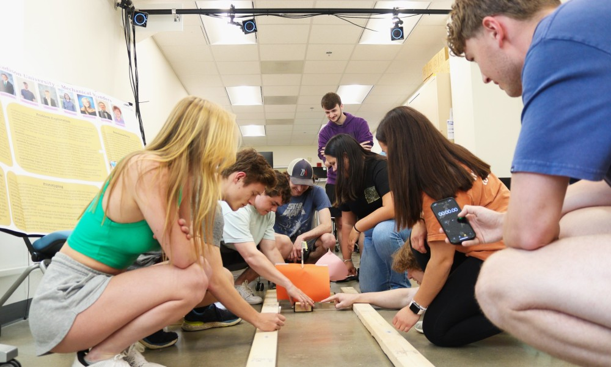
A team of engineering students designed and built three interactive exhibits — Wind Racers, Marble Mayhem, and Wingin' It — for Explore More Discovery Museum in Harrisonburg, working with the museum's exhibit director from concept through installation.
"I strive to create experiences for my students — to think about engineering from a different and unique perspective."
— Dr. Shraddha Joshi, faculty advisor
"Interviewing stakeholders helped me develop crucial speaking skills and better understand how to engineer for people."
— Michael Poole, student team member
Read more here: jmu.edu/news, May 13, 2024
Wearable Computing Group · Class of 2026
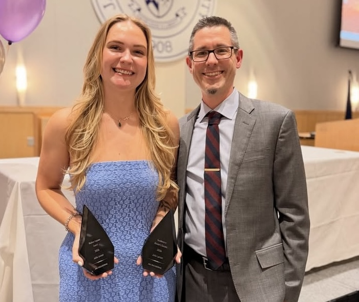
Since joining JMU's Wearable Computing Group in 2022, Julia Larson conducted independent research on haptic feedback for exercise performance and recall — written up as an honors thesis under review for the 2026 International Symposium on Wearable Computing. She graduated Summa Cum Laude with Honors Distinction in Engineering and is headed to a Ph.D. in Biomedical Engineering at Penn State.
Read more here: jmu-wearable-computing.github.io, May 15, 2026